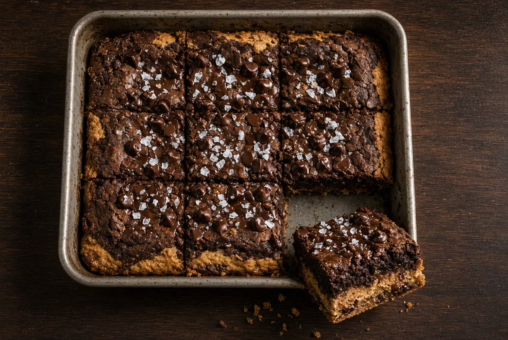

High-Protein Chocolate Peanut Butter Brookie
Pan bars, not a skillet cookie. Peanut-butter cookie base, cocoa brownie top, baked in an 8x8 pan and cut into squares. Cottage cheese, peanut butter powder, and one scoop of chocolate protein. About 17 grams of protein per square.

By
Yield: 8 squares
Prep:
Cook:
Total:
Ingredients
Peanut butter cookie base
- 1/2 cup low-fat cottage cheese (113 g)
- 3 tablespoons natural peanut butter (48 g)
- 1/4 cup peanut butter powder (24 g)
- 1 large egg
- 1 large egg white
- 2 tablespoons packed brown sugar
- 1/2 teaspoon vanilla extract
- 1/4 cup oat flour (20 g)
- 1/4 teaspoon baking soda
- Pinch of fine salt
Chocolate brownie top
- 1/2 cup low-fat cottage cheese (113 g)
- 1/2 cup nonfat plain Greek yogurt (120 g)
- 1 scoop chocolate whey or casein protein powder (about 30 g)
- 1 large egg
- 3 tablespoons unsweetened cocoa powder
- 1 tablespoon packed brown sugar
- 1/4 cup oat flour (20 g)
- 1/2 teaspoon vanilla extract
- 1/4 teaspoon baking soda
- Pinch of fine salt
- 3 tablespoons mini chocolate chips, divided
- Flaky salt, for the top
- Butter or oil, for the pan
Instructions
- Heat the oven to 350°F. Butter an 8x8-inch metal pan and line it with parchment, leaving a flap on two sides. This is a bar, not a skillet cookie.
- Blend the peanut-butter base until smooth: cottage cheese, peanut butter, peanut butter powder, egg, egg white, brown sugar, vanilla, oat flour, baking soda, and salt. Scrape the jar and blend again if curds remain.
- Spread the cookie base in an even layer. It is thick. Use a wet spatula. Bake 8 minutes, until the surface looks set but not browned.
- While the base bakes, rinse the blender. Blend the brownie top: cottage cheese, Greek yogurt, protein powder, egg, cocoa, brown sugar, oat flour, vanilla, baking soda, and salt. Stir in 2 tablespoons of the chocolate chips by hand.
- Spread the brownie batter over the hot cookie base. Scatter the last tablespoon of chips and a pinch of flaky salt on top.
- Bake 14 to 16 minutes more. The top should be set at the edges and still slightly soft in the center. A toothpick at the edge comes out with moist crumbs, not raw batter.
- Cool in the pan 20 minutes, then lift out with the parchment and cool until the cut holds. Cut 8 squares. Each bar should show cookie on the bottom and brownie on top.
Notes
Baked in an 8x8 pan as bars. Do not bake this in a skillet.
No coffee and no espresso powder. Cocoa and peanut butter carry the flavor.
One scoop of chocolate protein is in the brownie top on purpose. A sweetened scoop means you can drop the brownie brown sugar. Unflavored protein works; add the sugar back. Skip the powder and add another 1/2 cup cottage cheese if you want it out. The crumb is denser and each square loses about 3 grams of protein.
Peanut butter powder is the fat cut. The 3 tablespoons of real peanut butter are there so the base still tastes like peanut butter. Do not swap all of it for jar peanut butter or the bars turn greasy and the protein density drops.
Oat flour is rolled oats blitzed in a blender. All-purpose flour, same weight, works.
Estimated from USDA values for 1% cottage cheese, nonfat Greek yogurt, natural peanut butter, powdered peanut butter, eggs, cocoa, oat flour, brown sugar, and a 30 g chocolate whey scoop at 24 g protein, plus mini chips: about 200 calories, 17 g protein, 16 g carbohydrate, and 8 g fat per square (8 squares). Brands move those numbers. Cut 6 squares and each lands near 23 grams of protein and 265 calories.